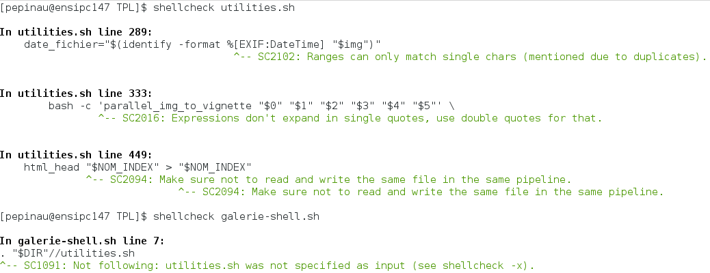

Rapport – « Galerie Shell »
Aurélien PEPIN – 1A_G2
Le rendu contient :
shellcheck ;
Le programme implémente la totalité des fonctionnalités minimales ainsi que celles de la partie « Pour aller plus loin ».
Il est actuellement en version 1.6.1 (cf. git log).
Le détail des tests apparaît lors de leur exécution. Pour exécuter un test, se déplacer
dans le dossier tests et exécuter ./test_X.sh
| Nom du test | Test | Comportement attendu |
|---|---|---|
| test_A.sh | Appel de la commande avec un minimum d'arguments. | La galerie n'est pas générée car /tests ne contient pas d'images. |
| test_B.sh | Galerie en mode verbeux, avec changement d'index et parallélisation. | Les images sont générées 7 par 7. |
| test_C.sh | La source et la destination ne sont pas dans le dossier du test ou de la galerie. | L'accès aux chemins relatifs est résolu correctement. |
| test_D.sh | La source et la destination comporte des espaces. | Les espaces ne perturbent pas la génération de la galerie. |
| test_E.sh | De fausses images .JPG sont ajoutées au test. | Les fausses images ne doivent pas être générées. |
| test_F.sh | Des images avec des caractères spéciaux sont ajoutées au test. | Les caractères spéciaux ne font pas échouer le programme. |
| test_G.sh | Tous les tests précédents sont compilés en un seul. | La galerie est générée malgré toutes les contraintes précédentes. |
| test_H.sh | De vraies images avec la date de prise de vue sont utilisées. | Les légendes de la galerie lisent les informations de l'image. |
Pour certains tests, il est impossible d'utiliser la commande make-img. Des dossiers sources de test contenant des images de test ont donc été versionnées. Ces images prennent peu de place. Il s'agit par exemple des images contenant une date de prise de vue pour le test des légendes.
shellcheckCliquer sur l'image pour l'afficher en taille réelle.
